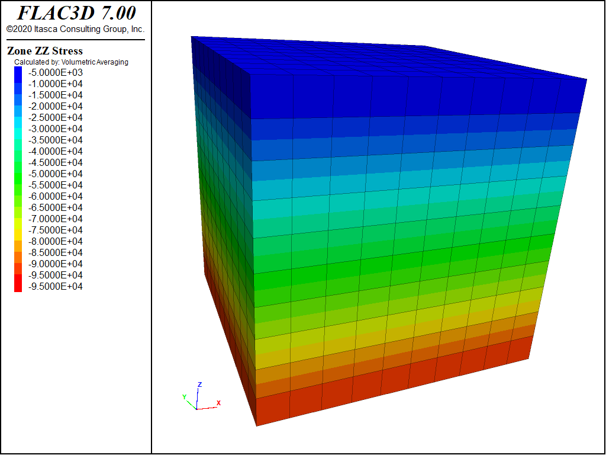
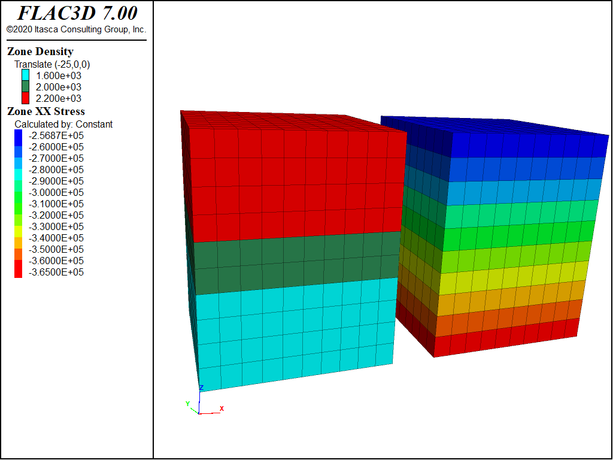
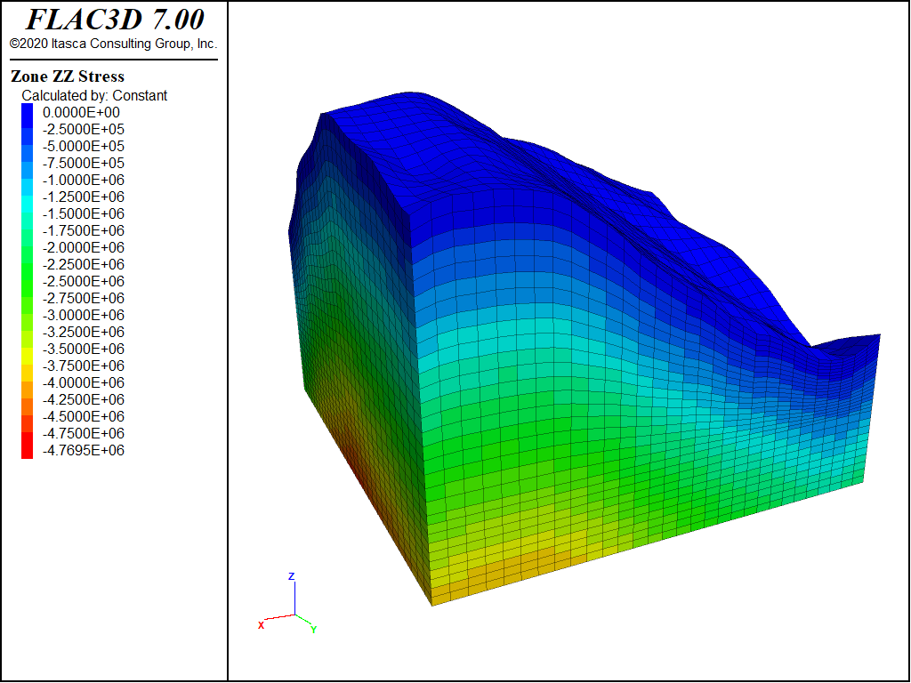
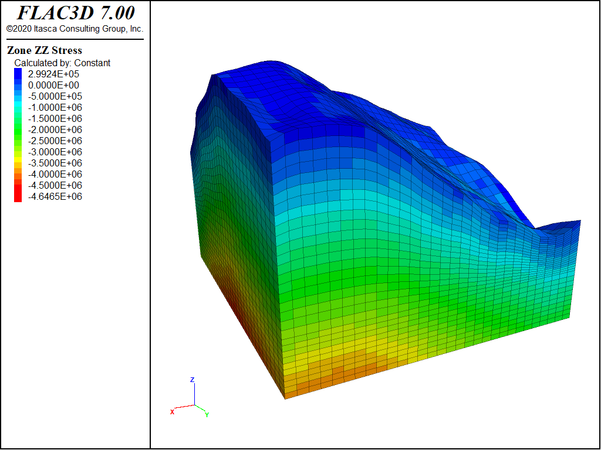
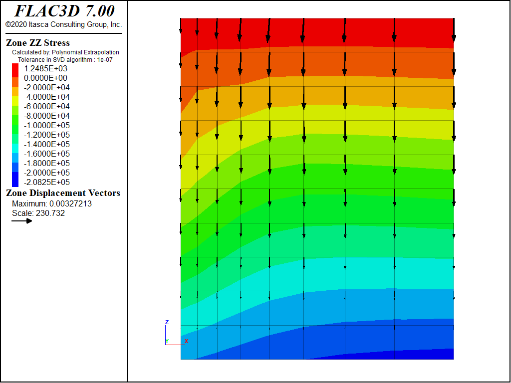
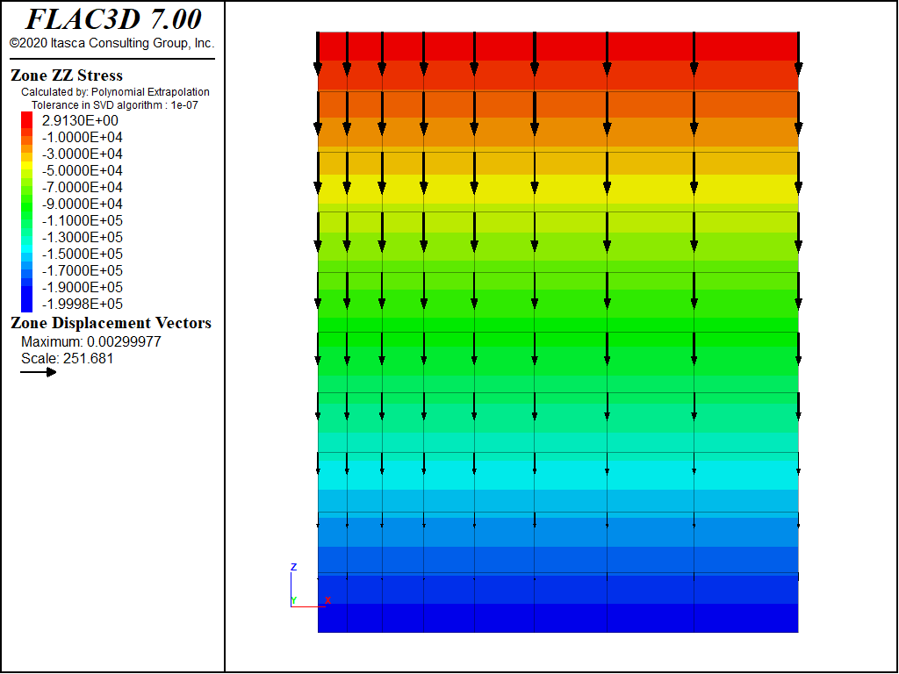
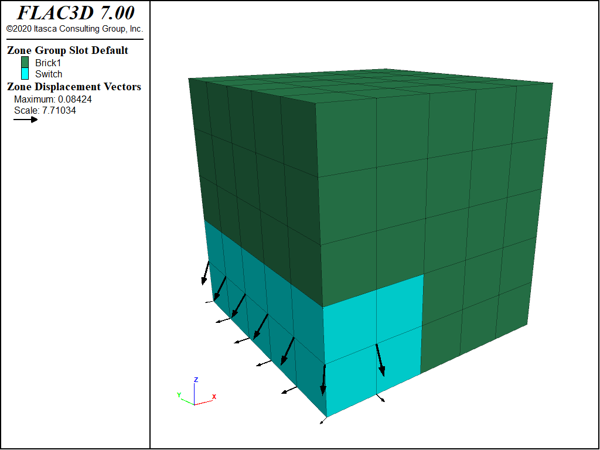
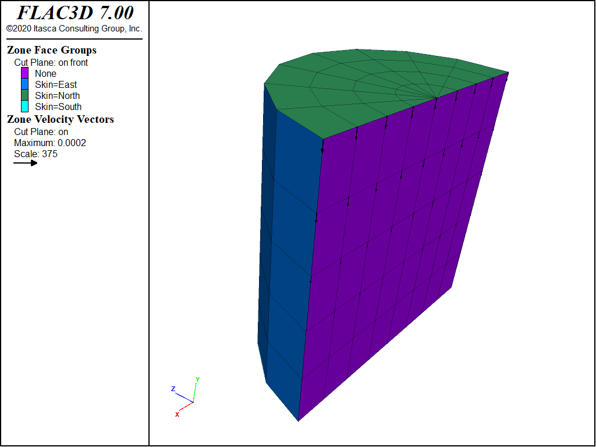

初始条件
所有土木或采矿工程项目中，在任何开挖或施工开始之前，地层内均存在原位应力状态。在 FLAC3D 中，通过设置初始条件尝试重现这一原位状态。理想情况下，初始状态信息来自现场测量。但若无法获取，可针对一系列可能条件运行模型。尽管可能条件的范围潜在地是无限的，仍存在若干约束因素（例如，系统必须平衡，且任何位置均不得违反所选屈服准则）。
对于具有自由表面的均匀土层或岩层，竖向应力通常等于 \(gρz\)，其中 \(g\) 为重力加速度、\(ρ\) 为材料质量密度、\(z\) 为地表以下深度。但原位水平应力更难估计。一种常见但错误的观点认为，水平应力与竖向应力之间存在某个“自然”比值，由 \(ν/(1-ν)\) 给出，其中 \(ν\) 为泊松比。该公式基于以下假设推导：突然对一块侧向运动受限的弹性材料施加重力。由于反复构造运动、材料破坏、上覆层移除，以及断层和局部化形成的锁定应力，这种条件在实践中几乎从不成立（见局部化、物理不稳定性与路径相关性（Localization, Physical Instability, and Path-Dependence））。当然，如果充分了解某一体积材料的历史，就可以数值模拟整个过程，以得到拟建工程的初始条件，但这种方法通常不可行。一般采用折中方式：在网格中赋予一组应力，然后运行 FLAC3D 直到达到平衡状态。必须认识到，任意给定系统都有无穷多个平衡状态。
以下主题将考察逐渐复杂的情况，以及指定初始条件的方法。鼓励用户尝试所提供的各个数据文件。
均匀应力——无重力
对于深部地下开挖，开挖从顶部到底部的重力应力变化，相对于作用在所模拟岩体体积上的应力量级很小，因此可忽略。可以省略 设置重力命令（model gravity） 命令，使重力加速度默认为零。可通过 zone initialize 命令赋予初始均匀应力。例如，以下命令
zone initialize stress-xx -5e6
zone initialize stress-yy -1e7
zone initialize stress-zz -5e6
将整个网格中的应力分量 \(\sigma_{xx}\)、\(\sigma_{yy}\) 和 \(\sigma_{zz}\) 分别设为压应力 -5 × 106、-107 和 -5 × 106。如果希望将应力限制在某个子网格，可添加范围参数。
stress 关键字可用于一次性初始化整个应力张量。这仅能用于均匀应力场。以下命令几乎是等效的：
zone initialize stress xx -5e6 yy -1e7 zz -5e6
区别在于，stress 关键字会初始化范围内每个网格单元的全部六个应力分量。未明确赋值的分量假定为零。
zone initialize 命令将所有应力设置为给定值，但不保证应力处于平衡。至少可能存在两个问题。第一，应力可能违反赋予网格的非线性模型的屈服准则。此时，一开始循环就会出现塑性流动，应力会重新调整。应先试算一步并检查响应，确认是否存在这一可能性（例如，创建网格单元绘图项，将“着色依据”设为“标签”，再将“标签”设为“状态”）。第二，网格边界上的规定应力可能不等于给定初始应力。此时，循环一开始，边界网格点就会运动。同样，应检查输出，确认是否存在这种情况（例如绘制网格单元矢量绘图项，将“数值”设为“速度”）。下例给出一组命令，使初始应力与规定边界应力平衡。
处于平衡的初始应力与边界应力
model new
zone create brick size 6 6 6
zone face skin
zone cmodel assign elastic
zone initialize stress xx=-5e6 yy=-1e7 zz=-2e7
zone face apply stress-xx=-5e6 range group 'East' or 'West'
zone face apply stress-yy=-1e7 range group 'North' or 'South'
zone face apply stress-zz=-2e7 range group 'Top' or 'Bottom'
当然，如果边界由速度控制而非应力控制，初始应力会自动处于平衡，无需 施加网格单元面条件（zone face apply） 命令。有关边界条件，尤其是 zone apply 和 施加网格单元面条件（zone face apply） 命令的更多详细信息，见边界条件（Boundary Conditions）。
带梯度的应力——均匀材料
靠近地表时，应力随深度的变化不能忽略。设置重力命令（model gravity） 命令告知 FLAC3D，重力加速度作用于网格。必须理解，设置重力命令（model gravity） 命令不会直接使网格中出现应力；它仅使体力作用于所有网格点。这些体力对应每个网格点周围材料的重量。如果没有初始应力，这些力会使材料在步进过程中沿力的方向运动，直到网格单元应力产生大小相等、方向相反的力。给定适当边界条件（例如底部固定、侧面滚动边界）时，模型实际上会自行生成与所施加重力相容的重力应力。但这一过程效率较低，因为可能需要数百步才能达到平衡。更好的方法是初始化内部应力，使其同时满足平衡和重力梯度。
zone initialize-stresses 命令会自动初始化重力应力场。必须先发出 设置重力命令（model gravity） 命令，并为所有网格单元赋予 density。无论几何形状多么不规则，zone initialize-stresses 都能计算应力。它查找所有影响重力荷载的数值变化，并跟踪从给定网格单元沿重力反方向移动时会穿过哪些变化位置。
具有重力梯度的初始应力状态
model gravity 10
zone initialize-stresses ratio 0.5
zone face apply stress-normal [-1000*10*10*0.5] ...
gradient (0,0,[1000*10*0.5]) ...
ratio 关键字指定水平应力比 \(K_0\)，用于确定本例中相等的 \(\sigma_{xx}\) 和 \(\sigma_{yy}\) 应力。请注意，如果使用应力边界条件，则必须与 zone initialize-stresses 计算的应力相容。本例可使用行内 FISH，使荷载和梯度计算清晰简单。最大竖向压应力为高度 * 密度 * 重力 * 比值，梯度为密度 * 重力 * 比值。请注意，此简单模型为 10 m × 10 m × 10 m 的均质材料盒体，顶面自由。
对于此特定情况，以下 zone initialize 命令在功能上与 zone initialize-stresses 相同
model solve
zone initialize stress-xx [-1000*10*10*0.5] gradient (0,0,[1000*10*0.5])
zone initialize stress-yy [-1000*10*10*0.5] gradient (0,0,[1000*10*0.5])
本例中，水平应力及其梯度等于竖向应力及其梯度的一半，但也可设为任何不违反屈服准则（本例为 Mohr-Coulomb）的值。准备好此类数据文件后，应执行一个计算步并绘制速度场；如果内部应力与边界应力不匹配，会表现为一个或多个边界的系统性运动。微小而杂乱的速度可以忽略（见结果解释：网格点速度（Interpretation: Gridpoint Velocities））。一步之后的不平衡力将非常小，但可能不精确为零，这是舍入误差造成的。


图 1：均匀梯度下平衡的竖向应力。
请注意，使用 gradient 关键字指定的梯度，将应力关联到网格单元形心（即形心的全局位置通过梯度决定应力值）。因此，尽管上例施加的 \(\sigma_{xx}\) 应力从 -5.0 × 106 变化至 -4.5 × 106，本例实际网格单元应力却从 -4.975 × 106 变化至 -4.525 × 106。绘制应力等值线时，可以将网格单元应力从形心插值到边界，也可以不插值；边界上的应力并不精确等于边界网格单元内的应力。要查看差异，可绘制网格单元绘图项，将“着色依据”设为“等值线”、“数值”设为“应力”、“分量”设为“zz”。然后改变“方法”属性的选择（选项为“常量”“体积平均”“反距离加权”和“多项式外推”），观察结果。“方法”设为“常量”时，显示网格单元中的实际应力。
带梯度的应力——非均匀材料
当较复杂模型中存在不同密度材料时，通常应使用 zone initialize-stresses 确定初始应力。考虑一个具有自由表面、侧面为滚动边界且底部固定的盒形分层系统。假定材料密度分布如下：
深度 0 至 10 m：1600 kg/m3
深度 10 至 15 m：2000 kg/m3
深度 15 至 25 m：2200 kg/m3
以下数据文件可生成平衡状态。
非均匀材料中的初始应力梯度
model new
model large-strain off
; 创建网格单元
zone create brick size 10 10 10 ...
point 0 (0, 0,0) point 1 (20,0, 0) ...
point 2 (0,20,0) point 3 ( 0,0,25)
zone face skin
; 本构模型和参数
zone cmodel assign elastic
zone property bulk 5e9 shear 3e9
zone initialize density 1600 range position-z 0 10
zone initialize density 2000 range position-z 10 15
zone initialize density 2200 range position-z 15 25
; 边界条件
zone face apply velocity-normal 0 range group 'East' or 'West'
zone face apply velocity-normal 0 range group 'North' or 'South'
zone face apply velocity-normal 0 range group 'Bottom'
zone face apply stress-normal -1e6 range group 'Top'
; 初始条件
model gravity 10
zone initialize-stresses ratio 0.25 0.5 overburden -1e6
model solve
如果不使用 zone initialize-stresses，则必须根据各材料接触面上方已知覆土，手动计算该接触面处的应力。对于简单分层材料，这尚可处理：利用梯度公式（gradient formula）计算 zone initialize 命令中 stress-zz 后的数值。gradient 值就是各层中由重力梯度造成的变化。本例在表面添加了 -1e6 的覆土荷载，并在 \(\sigma_{xx}\) 和 \(\sigma_{yy}\) 方向采用不同水平应力比。


图 2：非均匀密度及所得平衡竖向应力。
更复杂情况下，如果由于某种原因 zone initialize-stresses 不适用，则需要使用 FISH 函数，根据已知材料性质分布计算初始近似应力值。
非均匀材料中的应力初始化
FLAC3D 网格中存在内部不均匀性，不应改变应力初始化方式。但可能需要轻微调整，因为网格不规则时，各力不能完全平衡。例如，网格内部可以变形为圆柱形，以便在后续计算阶段“开挖”隧道。此时会存在极轻微的初始力不平衡，但可通过少量计算步将其消除，如本例所示。
非均匀网格的初始应力状态
model new
model large-strain off
; 创建网格
zone create radial-cylinder size 3 8 4 5 fill ...
point 1 (10,0,0) point 2 (0,10,0) point 3 (0,0,10)
zone face skin
; 本构模型和参数
zone cmodel elastic
zone property shear 3e8 bulk 5e8 density 2500
; 边界条件
zone face apply velocity-normal 0 range group 'East' or 'West'
zone face apply velocity-normal 0 range group 'North' or 'South'
zone face apply velocity-normal 0 range group 'Bottom'
; 初始条件
model gravity 10
zone initialize-stresses
model solve
一个计算步后，不平衡力比约为 3.5e-3。还需约 200 步，才能将其降至 1e-5。该调整产生的最终网格单元应力和位移如下所示。

自由表面几何形状不规则时，情况更加复杂。下一示例使用 按地形生成单元命令（zone generate from-topography） 命令生成后图所示的“山脉”。
不规则表面的初始应力状态
model new
model large-strain off
; 创建网格单元
zone create brick size 30 30 10 point 0 (0,0,0) point 1 (580,0,0) ...
point 2 (0,680,0) point 3 (0,0,100)
geometry import 'test.stl'
zone generate from-topography direction (0,0,1) geometry-set 'test' segments 20
zone face skin
; 本构模型和参数
zone cmodel assign elastic
zone property bulk 3e8 shear 2e8 density 1000
; 边界条件
zone face apply velocity-normal 0 range group 'East' or 'West'
zone face apply velocity-normal 0 range group 'North' or 'South'
zone face apply velocity-normal 0 range group 'Bottom'
; 初始条件
model gravity 10
zone initialize-stresses ratio 0.5
model solve elastic


图 4：FLAC3D 不规则地形网格中的初始化应力。


图 5：循环计算至平衡后的应力。
zone initialize-stresses 命令计算模型的近似竖向应力分布，该分布非常接近实际平衡。如果水平应力比设为 0，初始化后只需约 200 步即可达到完全平衡。但对于这样的地表地形，采用非零应力比时会出现问题。在底部附近完全正确的水平应力比，靠近边坡表面时通常过高。这可能需要一些时间才能达到平衡，还可能导致边坡表面产生不真实的位移甚至损伤。
对于此情况，没有简单方法计算更接近平衡的初始应力。不过，可采用多种不同方法辅助处理：
- 在不同高程和区域使用多条
zone initialize-stresses命令，并采用不同的 ratio 值。- 以弹性方式求解模型。
- 达到初始平衡后重置位移（无论如何，这通常都是良好做法）。
- 允许发生塑性流动以消除应力集中，然后重新赋予本构模型以重置状态变量。
还可能有许多其他方案，尤其是对于非线性、路径相关材料。不存在唯一“正确”的初始状态：选择可能取决于认为现场曾发生的地质过程类型。
非均匀网格内的压密
使用非均匀网格，使模型在重力作用下达到平衡时，有时会观察到令人困惑的结果。采用 Mohr-Coulomb 或其他非线性本构模型时，即使边界笔直、自由表面平坦，最终应力状态和位移分布也不均匀。以下示例的数据文件说明此效应（后图显示生成的位移向量和竖向应力等值线）。
非均匀网格中初始化的非均匀应力
model new
model large-strain off
; 创建网格单元
zone create brick size 8 8 10 ratio 1.2 1 1
zone face skin
; 本构模型和参数
zone cmodel assign mohr-coulomb
zone property bulk 2e8 shear 1e8 friction 30 density 2000
; 边界条件
zone face apply velocity-normal 0 range group 'East' or 'West'
zone face apply velocity-normal 0 range group 'North' or 'South'
zone face apply velocity-normal 0 range group 'Bottom'
model gravity 10
model save 'initial'
; -- 以下各行将生成非均匀分布：
model solve
model save 'nonuniform'
; -- 以下各行直接设置应力：
model restore 'initial'
zone initialize-stresses ratio 0.75
model solve
model save 'direct'
; -- 以下各行按弹性方式初始化：
model restore 'initial'
model solve elastic
model save 'uniform'


图 6：非均匀应力和位移。
由于竖直侧面设有滚动边界，我们可能期望材料在两侧等量下移。但网格在原点附近更细。FLAC3D 试图使所有网格单元的局部时间步相等，因此会增大 \(x\) = 0 边界附近网格点的惯性质量，以补偿较小的网格单元尺寸。于是这些网格点的加速度比 \(x\) = 8 边界附近更小。这不会影响线性材料的最终状态，却会使路径相关材料出现非均匀性。对于无黏聚力的 Mohr-Coulomb 材料，这类似于从某个高度将砂倒入容器，却期望最终状态均匀。实际上，由于围压不会立即形成，会产生大量塑性流动。即使网格均匀，这种方法也不理想，因为水平应力取决于过程的动力学。
最佳解决办法是使用 zone initialize-stresses 命令设置初始应力，使其符合期望的 \(K\)0 值（水平与竖向应力之比）。例如，如果在前一数据文件的 求解模型（model solve） 命令前添加以下一行，该命令将立即停止
model restore 'initial'
在 \(K\)0 = 0.75 时达到稳定状态，无需步进。
如果由于某种原因希望用 FLAC3D 计算最终状态，可以使用 模型弹性求解命令（model solve elastic） 选项。它先在不允许本构模型发生任何塑性破坏的情况下，将模型求解至平衡，然后重新启用破坏，并确保模型仍保持平衡。
model restore 'initial'
下图显示这种情况下的位移向量和竖向应力等值线。压密过程中不允许材料屈服，但达到平衡后恢复原有性质。


图 7：均匀应力和位移。
模型改变后的初始应力
某些情况下，达到期望应力分布的过程中使用一种本构模型，而后续模拟使用另一种本构模型。如果用另一种非空本构模型替换原本构模型，受影响网格单元中的应力会保留，如本例所示：
模型改变后的初始应力
model new
model large-strain off
; 创建网格单元
zone create brick size 5 5 5
zone face skin
zone group 'Switch' range position (0,0,0) (2,5,2)
; 本构模型和属性
zone cmodel assign elastic
zone property shear 2e8 bulk 3e8 density 2000
; 边界条件
zone face apply velocity-normal 0 range group 'Bottom'
model gravity 10
zone initialize-stresses
model solve
zone cmodel assign mohr-coulomb range group 'Switch'
zone property shear 2e8 bulk 3e8 friction 35 range group 'Switch'
model step 1000
运行到此处时，初始弹性模型产生的应力仍然存在，并作为采用新莫尔—库仑模型区域的初始应力。


图 8：本构模型更改区域及破坏产生的位移。
应记住两点：
第一，如果对任何网格单元赋予空模型（即使随后被其他模型替换），受影响网格单元中的所有应力都会被移除。
第二，如果用一种模型替换另一种模型，而新模型中的应力在物理上应为零，则必须用
zone initialize命令将应力重置为零。例如，采出岩石并以充填料替代时就会出现这种情况；充填料具有自己的应力状态，与被替换岩石无关。
存在潜水面时的应力与孔隙压力初始化
孔隙压力的初始化方式与应力相同。但无论是否指定 配置流体计算模式（model configure fluid），初始化的都是网格点孔隙压力，而非网格单元孔隙压力。网格单元孔隙压力由网格点孔隙压力平均得到，随后用于计算本构模型所需的有效应力。
手动初始化部分饱和网格可能令人困惑；必须记住两点：
- 如果网格未配置地下水计算，则潜水面（孔隙压力 = 0）以下指定的密度必须为湿密度，潜水面以上必须为干密度。用户负责为这些区域提供正确密度值。
- 如果网格已经配置地下水计算（配置流体计算模式（
model configure fluid）），则所有位置均指定干密度，流体的贡献由孔隙率、饱和度和流体密度自动计算。
如果为各情况指定了适当材料性质（对于 配置流体计算模式（model configure fluid） 为干密度／孔隙率／饱和度／流体密度，其他情况为湿／干密度分布），则 zone initialize-stresses 命令将自动计算包含流体重量的正确竖向应力。
请注意，使用 ratio 关键字计算的 \(\kappa_0\) 是基于有效应力。使用 total 关键字可按总应力计算水平应力比。
以下简短示例说明各个情况。
存在潜水面时的应力与孔隙压力初始化——网格未配置地下水计算
model new
model large-strain off
; 创建网格单元
zone create brick size 8 5 10
zone face skin
; 力学本构模型和属性
zone cmodel assign elastic
zone property bulk 1e9 shear 5e8 density 2000
zone property density 2500 range position-z 0 5 ; 湿密度
zone property density 2250 range position-z 5 6 ; 部分饱和密度
; 边界条件
zone face apply velocity-normal 0 range group 'East' or 'West'
zone face apply velocity-normal 0 range group 'North' or 'South'
zone face apply velocity-normal 0 range group 'Bottom'
; 初始条件
model gravity 10
zone water density 1e3
zone water plane origin (0,0,5) normal (0,0,1)
zone initialize-stress ratio 0.5
model solve ; 立即处于平衡状态
本例在潜水面处及其以下，将密度分别调整为部分饱和及湿密度值。
存在潜水面时的应力与孔隙压力初始化——网格已配置地下水计算
model new
model large-strain off
model config fluid
; 创建网格单元
zone create brick size 8 5 10
zone face skin
; 力学本构模型和属性
zone cmodel assign elastic
zone property bulk 1e9 shear 5e8 density 2000
; 流体本构模型和属性
zone fluid cmodel assign isotropic
zone fluid property porosity 0.5 permeability 1e-10
zone gridpoint initialize fluid-modulus 2e9
zone initialize fluid-density 1e3
; 边界条件
zone face apply velocity-normal 0 range group 'East' or 'West'
zone face apply velocity-normal 0 range group 'North' or 'South'
zone face apply velocity-normal 0 range group 'Bottom'
; 初始条件
model gravity 10
zone water density 1e3
zone water plane origin (0,0,5) normal (0,0,1)
zone gridpoint initialize saturation 0 range position-z 5.1 10
zone initialize-stress ratio 0.5
model solve ; 立即处于平衡状态
本例需注意几点。第一，潜水面以上的饱和度需要明确初始化为零。第二，如上所述，所有位置均给定干密度。第三，使用 zone water 命令初始化孔隙压力，这要求单独提供流体密度，与 单元初始化流体密度（zone initialize fluid-density） 命令中的设置相独立。
速度初始化
到目前为止，我们主要讨论应力初始化。通常不明确设置网格内部的速度；初始时其默认为零。但如果物体边界指定了速度加载条件，有时初始化整个物体的速度有助于尽量减小对系统的冲击。例如，在采用刚性压板的模拟三轴试验中，可以初始化速度，使整个试样内具有初始线性梯度，如下例所示。
三轴试验中的速度梯度
model new
model large-strain off
; 创建网格单元
zone create cylinder point 0 (0,0,0) point 1 (1,0,0) ...
point 2 (0,2,0) point 3 (0,0,1) ...
size 4 5 4
zone reflect normal (1,0,0)
zone reflect normal (0,0,1)
zone face skin
; 本构模型和参数
zone cmodel assign mohr-coulomb
zone property bulk 1.19e10 shear 1.1e10
zone property cohesion 2.72e5 friction 44 tension 2e5
; 边界条件
zone face apply velocity-normal -1e-4 range group 'North'
zone face apply velocity-normal 0 range group 'South'
zone face apply stress-normal -1e5 range group 'East'
; 初始化速度，使响应平滑。
zone gridpoint initialize velocity-y 0 gradient (0,-1e-4,0)
如果不施加线性梯度，内部网格点会受到初始冲击，因为它们必须加速，才能在整个试样中产生负速度。由于仅两端固定，内部网格点的后续运动不受控制。


图 9：简单三轴试样中初始化的速度。
| 这些内容对您有帮助吗？… 版权与免责声明 | FLAC3D © 2019, Itasca | 原文更新于 2020 年 10 月 8 日 |